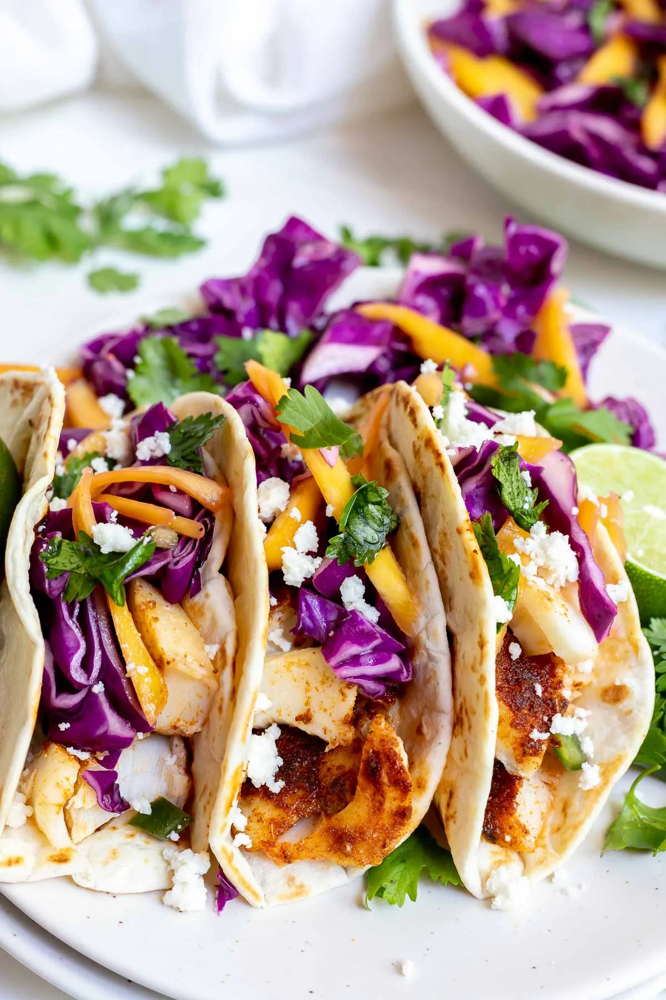

A plate of fish tacos
After prepping the components, fish, sauce, beans, slaw, etcetera, I like to craft my fish tacos in this way.
Ingredients
- Tortilla
- Fish Taco Sauce
- Beans
- Fish
- Cheese
- Fish Taco Slaw
- Hot Sauce
Steps
- Heat the tortilla.
- Apply fish taco sauce to the tortilla.
- Dole out cooked beans to the taco.
- Add cooked fish.
- Sprinkle shredded cheese atop the fish
- Toss some fish taco slaw over the cheese
- Cover this with your favorite hot sauce/salsa
Back Home